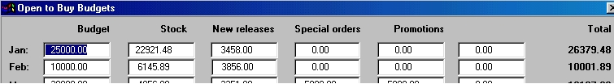

It is possible to set up a budget as an aid to controlling your purchasing. For budgeting to work all cost prices must be set up in the system.
Setting the budget
You can set the budget in System Options. Click on Utilities and then on System Options. Click on the Sundry tab and then the Open to Buy Budget button.

· Enter your monthly budget figures in the Budget column.
· The next five columns are the actual sale figures for each purchase orders sequence.
(The total column is the total of the five columns).
Every time a purchase order is finalised one these columns is updated:
· which column is determined by the purchase order number sequence selected.
· which month is determined by the month selected in the Month to Commit Order box.
· These figures are not cleared automatically. Each month you should manually reset the oldest month's figures to zero.
· After changing the figures, click on the Recalculate button reset totals column.
New releases
Some customers use budgeting only to control purchasing of new releases. In that case you can use the Budget column to store the budget for new releases only. This can then be compared to the actuals column for new releases.
You can set up a new releases purchase order sequence in the Purchasing window in System Options.